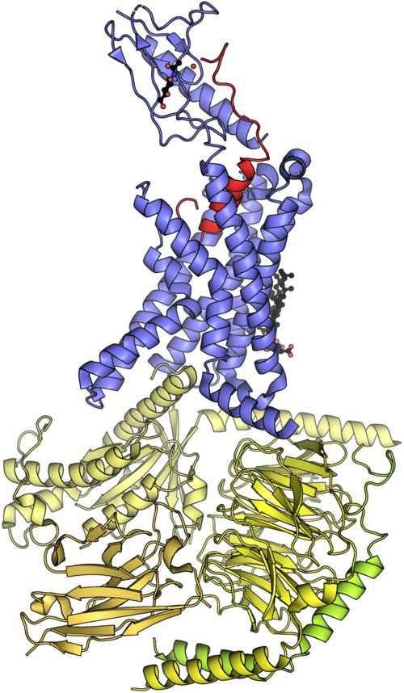

Tratar, rehabilitar, acompañar
Trombólisis y trombectomía, antiepilépticos, levodopa, estimulación cerebral profunda, anti-CGRP, fármacos de la esclerosis múltiple, anticuerpos anti-amiloide, toxina botulínica y neurorrehabilitación.
Ictus
 Ictus
IctusTrombólisis y trombectomía
Los dos tratamientos que pueden revertir un ictus isquémico si se aplican a tiempo: un fármaco que disuelve el coágulo y un catéter que lo extrae. Ventanas de tiempo, resultados y riesgos.
Leer → Ictus
IctusUnidades de ictus y teleictus
La unidad de ictus cuida al paciente los primeros días con personal especializado y monitorización continua; el teleictus acerca el neurólogo a los hospitales pequeños. Dos medidas que salvan vidas y reducen la discapacidad.
Leer →IctusCódigo ictus
Qué es el código ictus, cómo se activa con el 112, qué pasa minuto a minuto desde la llamada hasta la trombólisis o la trombectomía, y qué puedes hacer tú para ganar tiempo.
Leer → Ictus
IctusPrevención del ictus
Cómo evitar un primer ictus y, sobre todo, otro después del primero. Tensión, colesterol, antiagregantes, anticoagulantes, cirugía de la carótida y hábitos, con los objetivos de las guías.
Leer →Fármacos
 Fármacos
FármacosFármacos antiepilépticos
Más de veinte medicamentos que previenen las crisis. Cómo se eligen, qué efectos adversos vigilar, por qué no se deben suspender de golpe y qué pasa en el embarazo.
Leer → Fármacos
FármacosLevodopa y fármacos del párkinson
La levodopa, descubierta en los años sesenta, sigue siendo el tratamiento más eficaz del párkinson. Cómo funciona, qué son las fluctuaciones y qué otros fármacos existen.
Leer →
FármacosTratamientos de la migraña
Desde el ibuprofeno y los triptanes hasta los anticuerpos anti-CGRP y los gepantes: cómo tratar una crisis, cuándo empezar un preventivo y qué ha cambiado en la última década.
Leer → Fármacos
FármacosTratamientos de la esclerosis múltiple
De los interferones de los años noventa a los anticuerpos monoclonales de alta eficacia: cómo actúan los fármacos modificadores de la enfermedad, cómo se elige y qué hay de nuevo.
Leer → Fármacos
FármacosAnticuerpos anti-amiloide
Lecanemab y donanemab retiran las placas de amiloide del cerebro y frenan algo el avance del alzhéimer en fases iniciales. Beneficio modesto, riesgos reales y requisitos estrictos.
Leer → Fármacos
FármacosToxina botulínica
El veneno más potente que se conoce, usado en dosis mínimas, relaja músculos hiperactivos. Tratamiento de referencia en distonías, espasticidad y migraña crónica.
Leer → Fármacos
FármacosTerapias génicas y de ARN
Fármacos que corrigen el efecto de un gen alterado: oligonucleótidos antisentido, terapia génica con virus y nuevas herramientas de edición. Ya han cambiado la atrofia muscular espinal y empiezan a llegar a otras enfermedades.
Leer → Fármacos
FármacosFármacos para la demencia
Donepezilo, rivastigmina, galantamina y memantina: para qué sirven, cuánto ayudan, qué efectos adversos tienen y qué otros fármacos se usan para los síntomas de la demencia.
Leer → Fármacos
FármacosTratamiento del dolor neuropático
El dolor que nace de un nervio dañado no responde a los analgésicos comunes. Fármacos de primera línea, parches, opciones si fallan y medidas sin medicamentos.
Leer → Fármacos
FármacosTratamiento del insomnio y de la narcolepsia
La terapia cognitivo-conductual es el primer tratamiento del insomnio crónico; los hipnóticos, solo a corto plazo. En la narcolepsia, fármacos que mantienen despierto y que controlan la cataplejía.
Leer → Fármacos
FármacosTratamiento del vértigo
Maniobras de reposición para el vértigo posicional, rehabilitación vestibular, fármacos solo durante unos días y tratamiento de la enfermedad de Ménière y de la migraña vestibular.
Leer → Fármacos
FármacosTratamiento de las infecciones del sistema nervioso
La meningitis bacteriana y la encefalitis herpética son urgencias que se tratan antes de tener el diagnóstico confirmado. Antibióticos, aciclovir, corticoides, vacunas y prevención en los contactos.
Leer →Cirugía y neuromodulación
 Cirugía y neuromodulación
Cirugía y neuromodulaciónEstimulación cerebral profunda
Electrodos implantados en el cerebro conectados a un generador, como un marcapasos cerebral. Reduce los síntomas del párkinson avanzado, el temblor esencial y la distonía.
Leer → Cirugía y neuromodulación
Cirugía y neuromodulaciónNeurocirugía
La cirugía del cerebro, la médula, la columna y los nervios. De los primeros cirujanos modernos a la navegación, la cirugía con el paciente despierto y la radiocirugía.
Leer → Cirugía y neuromodulación
Cirugía y neuromodulaciónNeuromodulación no invasiva
Estimulación magnética transcraneal, estimulación eléctrica y otras técnicas que modifican la actividad del cerebro desde fuera del cráneo. Para qué sirven y qué es todavía investigación.
Leer →Rehabilitación
 Rehabilitación
RehabilitaciónNeurorrehabilitación
Fisioterapia, terapia ocupacional, logopedia y neuropsicología para recuperar funciones tras un ictus, un traumatismo o en enfermedades crónicas. El cerebro puede reorganizarse, sobre todo si se entrena pronto.
Leer → Rehabilitación
RehabilitaciónInterfaces cerebro-ordenador
Dispositivos que leen la actividad del cerebro y la convierten en órdenes para un ordenador, un brazo robótico o una voz sintética. Avances reales en personas con parálisis y lo que todavía es promesa.
Leer →RehabilitaciónTratamiento de la espasticidad
La rigidez muscular que aparece tras un ictus, en la esclerosis múltiple, la lesión medular o la parálisis cerebral. Fisioterapia, fármacos orales, toxina botulínica y bomba de baclofeno.
Leer →